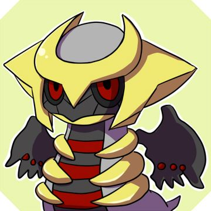

Top demais
Voltar para o site do Balacobaco

Em 2016 coloquei como uma das metas do ano "Aprender a fazer um bom nhoque", mas foi só no final de 2018 que finalmente fiz um nhoque com cara e sabor de nhoque.
Um prato que eu pensei "Eu pagaria por isso em um restaurante. Não pagaria muito caro, mas pagaria".
E considerando meus talentos gastronômicos, pra mim isso foi uma baita conquista, que só foi possível porque eu me empenhei muito mais do que nos anos anteriores.
Em um mês eu fiz mais nhoques (e tentativas de nhoques) do que a soma de todas as tentativas dos dois anos anteriores.
Eu aprendi empiricamente que a repetição constante é um importante hábito para aprendermos a fazer algo que exige técnica, tal como escrever...
Que é uma das minhas metas de 2019